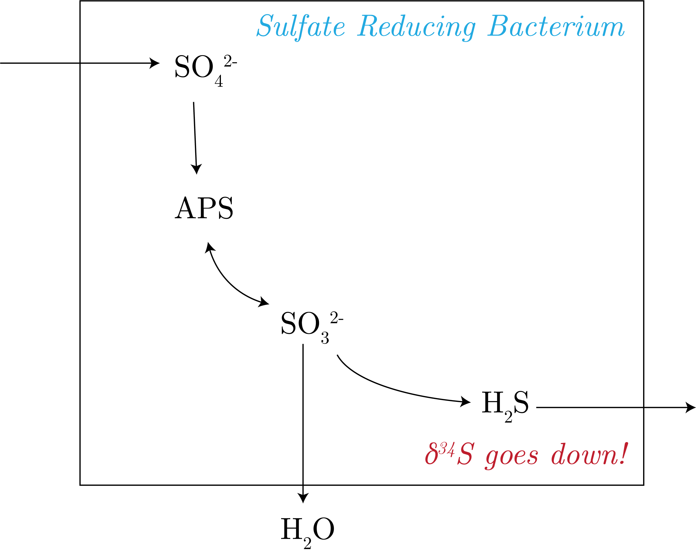
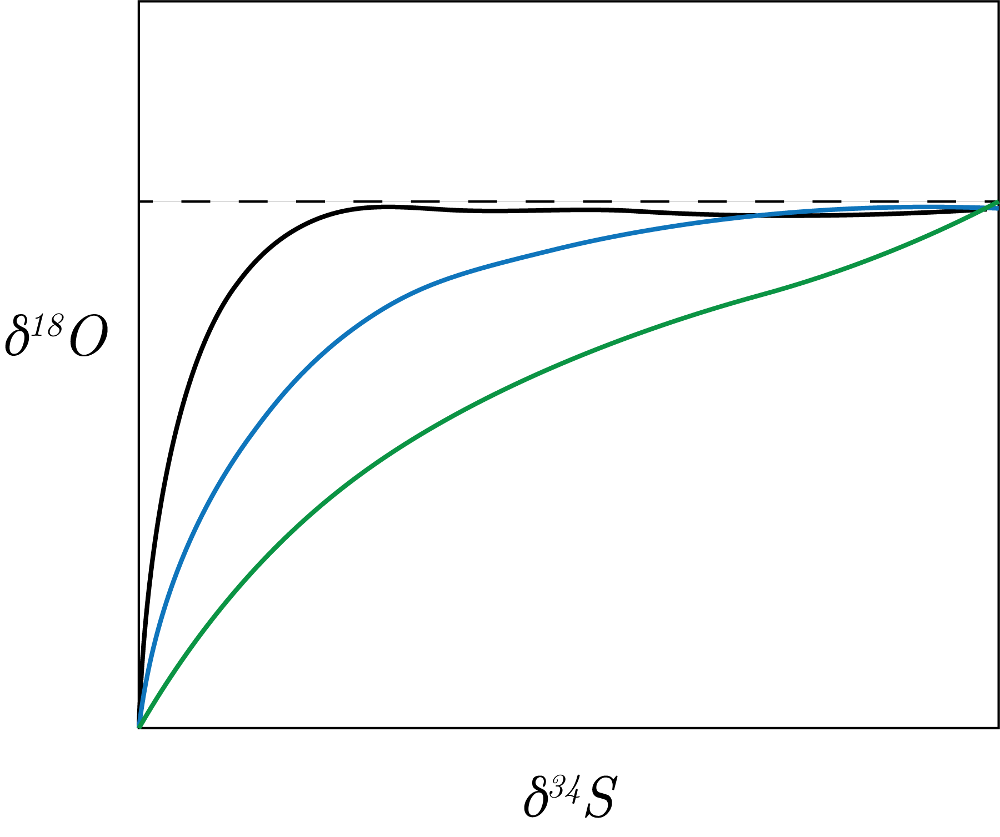
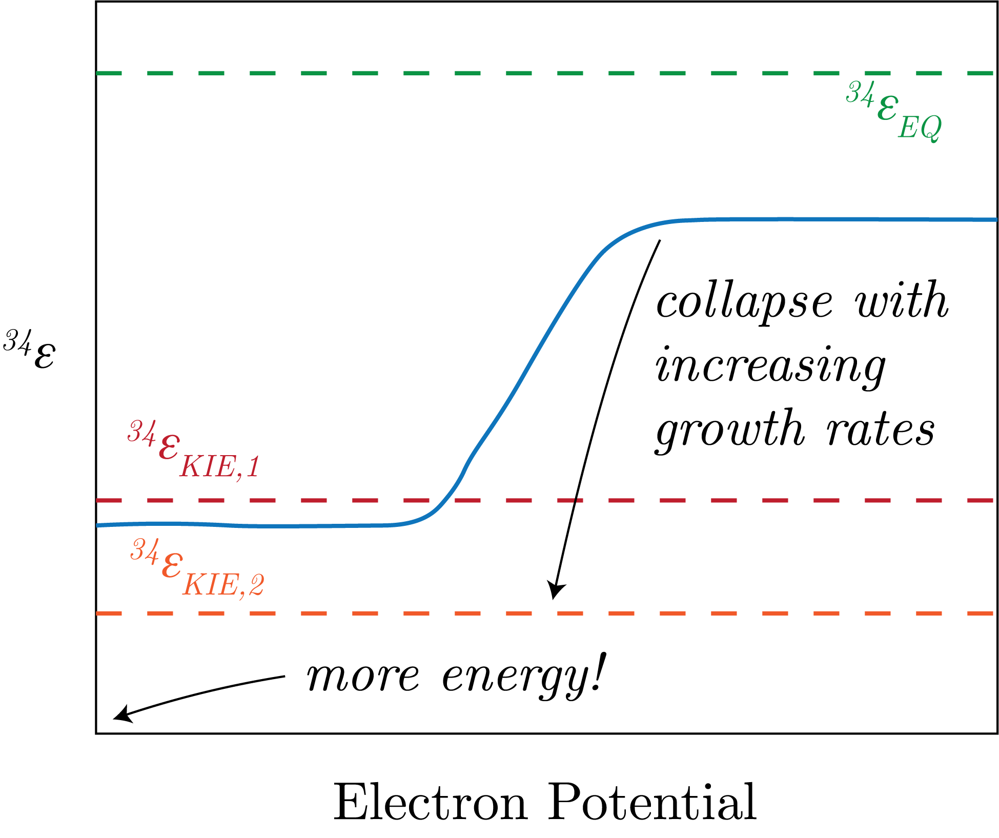
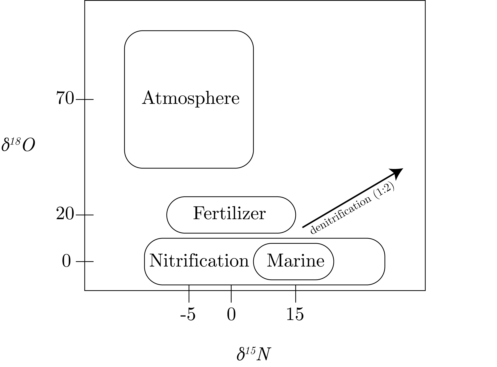
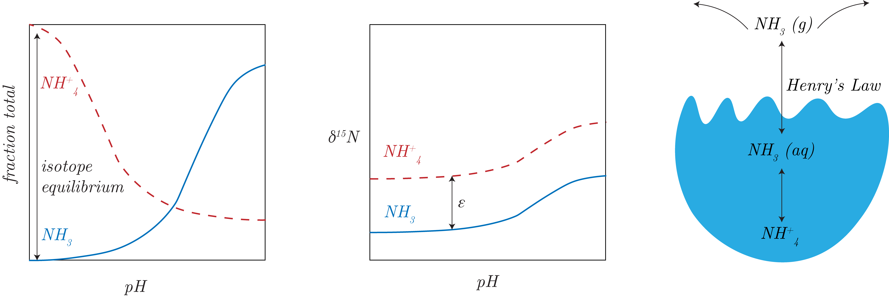
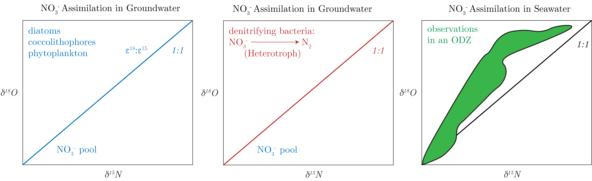
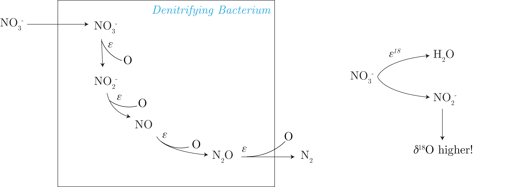
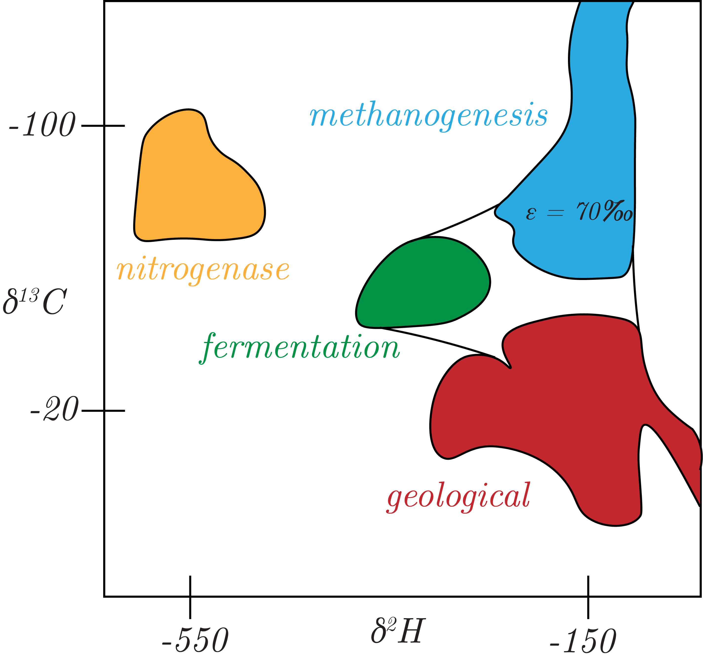
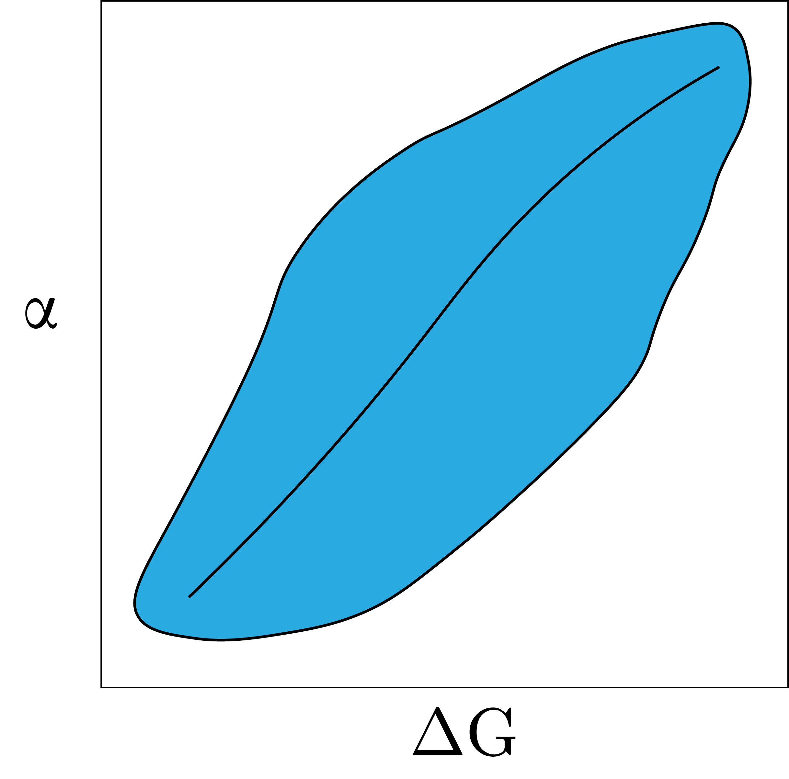

We will start with SO$_4^{2-}$.
Specifically, we note that this is an electron acceptor of heterotrophy and the consumption of organic matter.
Just go out to a marsh and take a deep breath!
A diagram of this system is in Fig. 1.

Fig. 1: A sulfate reduce bacterium and the effect on $\delta^{34}$S.
However, we saw that there was a change in the curvature of the $\delta^{18}$O to $\delta^{34}$S plots, as seen in Fig. 2

Fig. 2: Change in ther curvature of oxygen-sulfur system.
We see that this curvature is proportional to how often the back reaction between sulfite and APS (kinetic isotope effect) and between sulfite and water (equilibrium isotope effect), that is the greater the curvature, the higher the reversibility of the reaction
The steady state between these three competing systems is what we get as the ultimate value offset from water (the asymptote in Fig. 2 above).
We can write this as:
\begin{align}
\text{SO}_3^{2-} &\rightleftharpoons \text{H}_2\text{O} \\
\text{SO}_4^{2-} &\leftrightarrow \text{H}_2\text{O}.
\end{align}
We look at systems now of the form:
\begin{equation}
A \rightleftarrows_{\epsilon_b}^{\epsilon_f}B,
\end{equation}
which ends up with some, in the case of SO$_4^{2-}$, with some $\epsilon_{eq} = 70$ [‰]. This is enzyme reversibility.
Specifically, we can define:
\begin{equation}
^{34}\alpha_{net} = \left( ^{34}\alpha_{eq} - ^{34}\alpha_{KIE} \right)f + \:^{34}\alpha_{KIE},
\end{equation}
where we define $f$ with the Gibbs Free energy:
\begin{equation}
f = \exp\left[\Delta G / RT\right],
\end{equation}\
where $\Delta G$ is a ratio of the electron acceptor to electron donor (i.e., in heterotrophic environments where these is a competition between supply and demand of energy).
From these equations, we can see that as $\Delta G \to 0$, we get that there is less energy, therefore $f \to 1$ and $^{34}\alpha_{net} \to \:^{34}\alpha_{eq}$.
Conversely, as $\Delta G \to - \infty$ we have that there is more energyin the system, $f \to 0$, and $^{34}\alpha_{net} \to \: ^{34}\alpha_{KIE}$, which makes intuitive sense given the kinds of reactions taking place in each regime.
We can look at data to see that, with new experiments showing this understanding in data, as presented in Fig. 3.

Fig. 3: Sulfur system dynamics and the limiting regimes discussed previously graphically shown.
Nitrogen
We will specifically be interested in looking how nitrogen is coupled and decoupled with oxygen.
Presently, in the ocean the abundant form of nitrogen is nitrate, NO$_3^{2-}$.
We can look at the major resevoirs of nitrate in Fig. 4.

Fig. 4: Nitrate and Oxygen resevoirs on earth.
We note that mixigin in this phase space is linear.
The high atmospheric nitrate-oxygen pool is from reactions with ozone, O$_3$.
The high fertilizer nitrate values is from ammonia volitilization, in which ammonia is echanged with ammonium, which is exchanged with its gaseous form, leaving ammonia in the aqeuous pool.
This is presented in Fig. 5 below.

Fig. 5: Graphical and diagramatic understanding of ammonia volitilization.
Many species were then raised and under many different regimes of conditions (that did change the isotope effects), they saw a 1:1, that was controlled by the enzymes within the species that were causing the isotope fractionation, i.e., $^{18}\epsilon:^{15}\epsilon.$
However, when observations were taking in an ocean ODZ, we see that the data is above the 1:1 line.
We present this in Fig. 6.

Fig. 6: The difference between groundwater and seawater nitrate assimilation in the oxygen-nitrogen system.
The different here is possibly due to:
Freshwater vs. saltwater
Diffferent cycling of processes
Different organisms
So, we can start with describing denitrification:
\begin{equation}
\text{NO}_3^- \to \text{NO}_2^- \to \text{NO} \to \text{N}_2\text{O} \to \text{N}_2.
\end{equation}
We can see is that the cycling of nitrate and nitrite can explain the differences seen between groundwater and seawater.
What happens is:
\begin{equation}
\text{NH}_3 \to_{\text{O}_2: 23.5} \text{NH}_2 \text{OH} \to_{\text{H}_2\text{O}: -5} \text{NO}_2^- \to_{\text{H}_2\text{O}: -5} \text{NO}_3^-,
\end{equation}
determined from labelling experiments, which gives a mixing ratio, assuming equipartition: $(23.5 - 5 - 5) 3 = 4.5$ [‰].
However, this neglects any kinetic isotope effects.
We would also like to note that there are equilibrium effects with:
\begin{equation}
\text{NO}_2^- \leftrightarrow_{EQ} \text{H}_2\text{O}.
\end{equation}
We note that this only happens, as with sulfate, that the equilibriation with water is on the order of billion of years, so we can neglect any equilibrium effects.
Therefore, we see that there is a decoupling of N and O, this is to say that not only are the biological effects of N being taken into consideration here but also the isotope effects from the equilibration with O from the surrounding water.
We show this decoupling in Fig. 7.
Fig. 7: The Nitrogen-Oxygen decoupling in denitrification.
We finally cover the branching effect in the nitrogen cycle.
To begin, we note the process described in Fig. 8, where preliminarily note that the concentration of nitrate before entering the cell is going to be less than the N$_2$ leaving the cell, given -similation.

Fig. 8: The branching of the nitrogen cycle with in a denitrifying bacterium.
This is called "O atom abstraction."
It means that for O containing intermediates, we will get:
$\delta^{15}$N will be lower in the reactant pool
$\delta^{18}$O will be higher in the reactant pool
This is because the light isotope reacts faster than the heavy isotope, therefore leaving the reactant sooner, or a lower $\delta$ value.
In the abstraction, it is easier for the heavier to react given the isotope effect, making is to so that the $\delta$ value for O will be higher.
Methane
Methane is produced by methanogenesis:
\begin{equation}
\text{CO}_2 + 4\text{H}_2 \to \text{CH}_4 + 2 \text{H}_2\text{O},
\end{equation}
This has a large isotope effect.
There is also fermentation, or acetoclastic methanogenesis:
\begin{equation}
\text{CH}_2\text{COOH} \to \text{CH}_4 + \text{CO}_2.
\end{equation}
This process has a lesser isotope effect.
There is also a geologic component, which is:
\begin{equation}
\text{Org} \to \text{CH}_4,
\end{equation}
as we know that at high temperatures, isotopes are reduced.
We can look at all of this in Fig. 9.

Fig. 9: End members of H, including methanogenesis.
And lastly, we can wrap this all up by seeing in Fig. 10 that there is an increase in the fractionation factor with decreasing (less negative) $\Delta G$, which gets at the equilibrium of:
\begin{equation}
\text{CO}_2 \leftrightarrow \text{CH}_4.
\end{equation}

Fig. 10: The relationship between Gibbs Free Energy and Methanogenesis. Blue is the spread of the data and the center black line is the mean of the data.
So, when $\Delta G$ is low, there is very little energy to be gained from methane production, there is a lot of fractionation (this is an equilibrium effect).
When there is more energy around, we see something akin to a kinetic isotope effect.
As methane is at the bottom of the redox ladder, methanogenesis normally takes place where there is a not a lot of energy around.